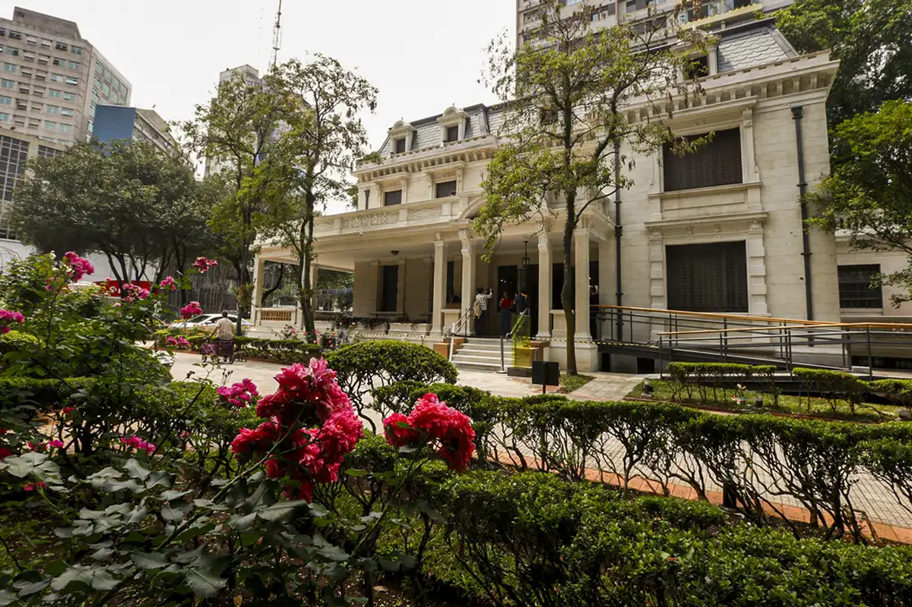
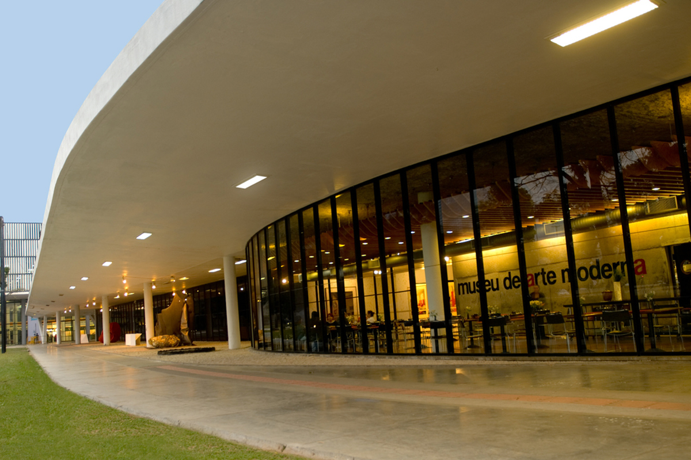

Museus para Adultos
Casa das Rosas

A Casa das Rosas é um espaço dedicado às mais diversas manifestações culturais, com enfoque em poesia e
literatura. No local, a liberdade artística se materializa em saraus, recitais, lançamentos de livros, peças de
teatro, cursos preparatórios, exposições e outros formatos que privilegiem a difusão da poesia e da arte em geral.
Onde: Av. Paulista, 37, Bela Vista
Quando: Terça a domingo das 10h as 17h30
Quanto: Gratuita
Museu do Futebol

O Estádio do Pacaembu abriga sob suas arquibancadas o museu que conta a história do esporte mais amado
pelos brasileiros. Quem visita o local pode conferir curiosidades sobre o futebol, narradores e até treinar um chute
virtual. O espaço tem como objetivo mostrar a importância desse esporte na história do Brasil. É um dos museus mais
tecnológicos e interativos da cidade e opção certa para levar os pequenos, que certamente vão se divertir.
Onde: Praça Charles Miller, s/n - Pacaembu
Quando: Terça a sexta, das 9h às 17h; sábado e domingo, das 10h às 18h
Quanto: R$12,00 (inteira); entrada gratuita às terças
Museu Afro Brasil

O Museu Afro Brasil foi fundado em 23 de outubro de 2004 e possui um acervo com mais de cinco mil
obras, produzidas desde o século XV, que representa a cultura africana e afro-brasileira.
Com pinturas, esculturas, gravuras, documentos, fotografias e peças etnológicas, o local abarca traços das diversas
representações da cultura africana e afro-brasileira, na perspectiva de autores nacionais e internacionais. O espaço
abriga ainda a Biblioteca Carolina Maria de Jesus com aproximadamente 6.800 publicações, com uma coletânea especial
de obras raras sobre tráfico atlântico e abolição da escravatura no Brasil, América Latina, Caribe e Estados Unidos.
Onde: Portão 10, Av. Pedro Álvares Cabral, s/n - Vila Mariana
Quando: Terça a Domingo, das 10h às 17h
Quanto: Ingresso: R$ 15,00 ;Ingresso de Estudante (apresentando carteirinha): R$ 7,50; de graça as quartas-feiras
Museu das Favelas

Trata-se de uma instituição que parte do passado, perfazendo o presente para contribuir com novos caminhos para o
futuro, partindo do princípio de que os caminhos para mudança precisam passar pelas favelas, por suas manifestações
culturais e pela potência dos que ali resistem, inovam e criam. E desta forma, busca ampliar o olhar, para além de
uma imagem cristalizada do que é a favela e, também, do que é um museu. Ele constrói uma visão expandida que inclui
também as vivências que partem de periferias, ocupações, assentamentos, regiões quilombolas, ribeirinhas, entre
outras; espaços distintos, mas que compartilham histórias de segregação e resistência.
Onde: Av. Rio Branco, 1269 - Campos Elíseos
Quando: Terça a Domingo, das 9h às 87h;
Quanto: Gratuito
Museu da Arte Moderna
